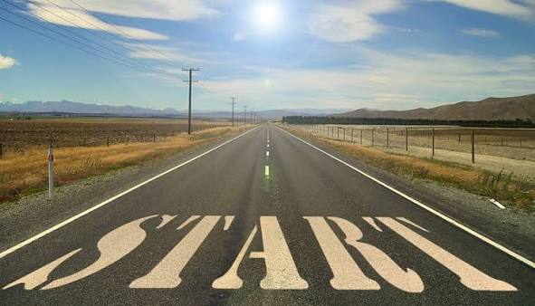

Фритрек и нулевой спринт: Подготовка к работе

Это было самое начало пути. На этом этапе важно было проникнуться основами и настроиться на учёбу. И, возможно, подумать, как новые знания могут повлиять на ваше будущее.
Было чересчур тревожно и волнительно. Думал о том, справлюсь ли я, продержусь ли хотя бы один спринт в таком темпе.